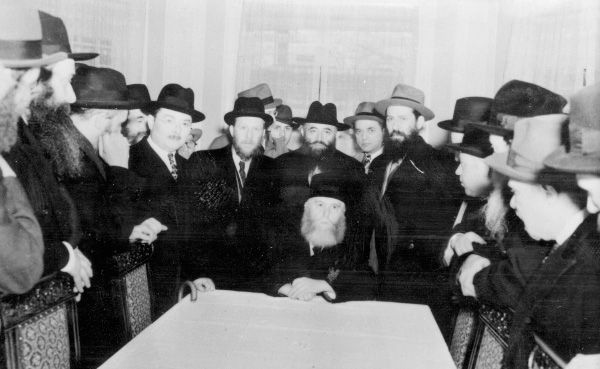

A Purim Farbrengen Beyond All Limitations
What took place on Purim 5681, the first Purim after the passing of the Rebbe Rashab? * They knew what the regime did with those who broke the law. But the Rebbe did not stop the simcha and niggunim for even a moment. He continued until those evil ones left without saying a word about all the “crimes” which they had witnessed.

PART I
Purim 5681/1921: the situation in Russia was very tense. These were the days of war and revolution. The situation in Rostov was also very severe. For the Chassidim, the situation was far worse. It was less than a year since the passing of the Rebbe Rashab. His only son, the Rebbe Rayatz, refused to lead as a Rebbe. He referred to himself as one of the Chassidim, a brother, a fellow mourner. The Chassidim knew they had to wait. They hoped that soon, at the end of the year of mourning, the sixth Chabad Rebbe would formally accept the nesius. In the meantime, they felt like orphans.
If that wasn’t enough, that winter the Rebbe Rayatz was seriously ill with typhus which had felled numerous victims. Doctors were called to the Rebbe’s house. They examined the Rebbe and feared for his life.
The Rebbe’s condition became critical. He later wrote describing his illness, how he was confined to bed for three months, and how there were days when he hovered between life and death.
It was first in Adar that his condition took a turn for the better, but he was still very weak. Nevertheless, he fasted on the Fast of Esther. He fainted in the middle of the fast and the family called for the doctor, Mr. Landau, who said, “He fasted so he fainted.” The Rebbe continued the fast until nightfall.
The Rebbe asked the doctor, “Tomorrow, the Chassidim and Anash will come. Can I farbreng and say Chassidus?”
The doctor said that the Rebbe could farbreng, but not for many hours as he had to be careful with his health. He also asked the Rebbe to say Chassidus briefly, no more than fifteen minutes, and that the Rebbe not meditates beforehand at length since this sapped his strength.
The Rebbe’s face was pale during the reading of the Megilla but he stood the entire time. However, he asked the reader to read the Megilla quickly.
PART II
The political situation in those days was very tense. A terrible civil war raged between the Whites and the Reds. Both sides found the Jews convenient scapegoats and vented their fury on them. The Bolsheviks already ruled in Rostov and everyone knew that they faced danger.
Under these circumstances, one couldn’t help but think about the events of the previous Purim 5680 with the Rebbe Rashab on the last Purim of his life. Just thinking about it brought a lump to one’s throat.
It seemed that due to the establishment of Bolshevik rule, everything had changed by the Rebbe Rashab. He was suddenly sequestered in his room a lot; he hardly received Chassidim. It was like a black cloud had descended. The once bustling Chassidus became still. Chassidim hardly visited the Rebbe’s home which was most unusual.
However, on Purim 5680, the Chassidim decided they could not allow Purim to just pass them by and they decided to visit the Rebbe’s home, even for a short farbrengen. The Rebbe consented, but they all knew that he would not spend a long time at the table. He would say a brief sicha and after he was done, all would leave.
The Bolsheviks reigned supreme. They issued a series of severe decrees in an attempt to prevent additional civil war. The rules stated it was forbidden to go out at night after 11:00. Even during daylight hours they refrained from going out except in the most urgent situations. Every gathering was forbidden and was considered a serious crime.
No wonder then that the Chassidim who went to the Rebbe’s house for the Purim farbrengen were quite nervous. Each of them washed his hands and ate a portion of HaMotzi knowing that he might have to get up and leave immediately.
The Rebbe Rashab washed his hands and then poured mashke and said l’chaim. Those present sensed a change in the Rebbe’s state of mind. The Rebbe began encouraging his Chassidim to increase their joy. He even took money out of his pocket and asked for more bottles of mashke to be brought. Then he said joyous niggunim should be sung as was always done on Purim.
Mashke was brought to the table and the Chassidim, seeing the Rebbe’s uplifted spirits, were uplifted themselves. The Rebbe ensured that each person drank mashke and he began singing loudly so that his voice could be heard outside, even though his apartment was located in the center of the city.
His only son, later to be the Rebbe Rayatz, was very frightened and did not know what to do. He feared that there would be reprisals against his father, but his father reassured him. At one point, he even took him into both of his hands in a gesture of closeness and said, “Yosef Yitzchok, do not fear! I am not impressed by them. It will be peaceful for us. I don’t mean only in our innermost chambers, but with our entire outwardness and extension! With our entire essence, I will continue to go on, whether in an orderly fashion or in a manner of ‘jumping the wall.’ This is what I ‘hear’ and how I feel. It will be peaceful for us because klipa in the face of holiness has no existence. I want that the holiness be in a revealed state …”
The Rebbe’s face was aflame. Everything that went on that night was wondrous to the Chassidim. “We had been to the Rebbe on many nights of simcha at farbrengens, but we never saw simcha like this before. The divrei Torah that we heard were deep and esoteric,” said one of the Chassidim later on.
Now, a year later, one could not help but remember the unexpected, or perhaps the anticipated, visit of the Bolsheviks, in the middle of the Purim meal. The Chassidim were terrified because they were a large gathering in the Rebbe’s house and this was illegal. They knew what the regime did with those who broke the law. But the Rebbe did not stop the simcha and niggunim for even a moment. He continued until those evil ones left without saying a word about all the “crimes” which they had witnessed.
That extraordinary Purim meal lasted twelve hours and was a goodbye party of sorts, as two weeks later the Rebbe’s holy soul departed.
PART III
One year later.
The political situation continued to be tense, but all of Anash and the T’mimim who were in Rostov gathered for a Purim farbrengen. The Rebbe Rayatz came out for the farbrengen and without minding the doctor’s warnings he sat and farbrenged for hours.
In the middle of the meal he began saying a maamer with the words, “Rava said, a person is obligated to drink on Purim …” The maamer took two and a half hours and one could see that the Rebbe had risen above all physical constraints.
It was surprising that after all this the Rebbe began to suddenly hurry up in order to conclude the farbrengen as quickly as possible. The Chassidim recited Birkas HaMazon and all went home. The Chassidim were sure that the Rebbe had finished the maamer early so that they would not have to go out to the street after 11:00 at night when the curfew began.
The next day the Rebbe said, “People thought that I rushed because of the late hour. That is not why! The reason is that my father said that when saying a maamer Chassidus and all goes well, one should leave off in the middle and stop.”
That was Purim 5681, the first Purim under the leadership of the Rebbe Rayatz.
(Based on Shmuos V’Sippurim and Reshimos D’varim)
Menachem Ziegelboim. "A Purim Farbrengen Beyond All Limitations." Beis Moshiach, no. 870 (February 20, 2013).